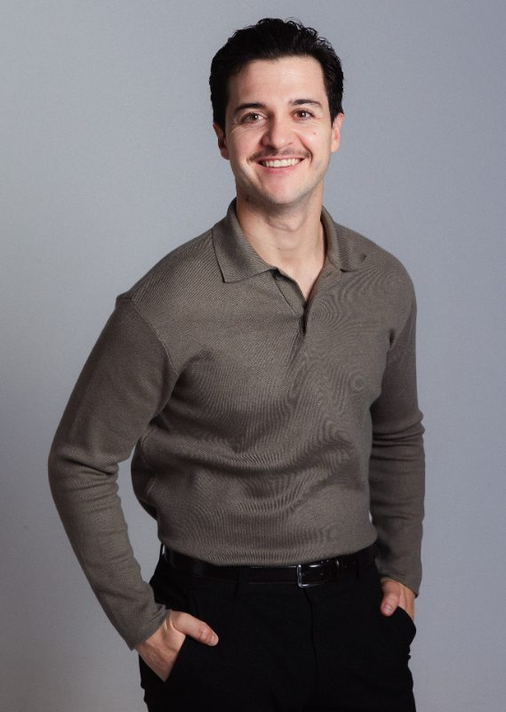

01Perfil profesional
Dani Téllez, actor
Actor de cine, televisión y teatro · Andalucía · Disponible en España e internacionalmente

Sobre mí
Historias que empiezan en el teatro.
La interpretación llegó a mi vida a través del teatro. Desde entonces, Dani Téllez ha seguido formándose y trabajando en proyectos escénicos y audiovisuales.
Su trayectoria incluye cine, televisión y teatro, con trabajos como Cerrar los ojos, Cuando nadie nos ve, Amar es para siempre, Cuéntame cómo pasó y Feria: La luz más oscura.
Con base en Andalucía, está disponible para rodajes, producciones escénicas y castings en toda España y a nivel internacional. Habla español e inglés y está representado por LIS Talent.
Su objetivo es construir personajes honestos, explorar nuevos registros y seguir creciendo con cada historia.
Consultar filmografía Ver videobook